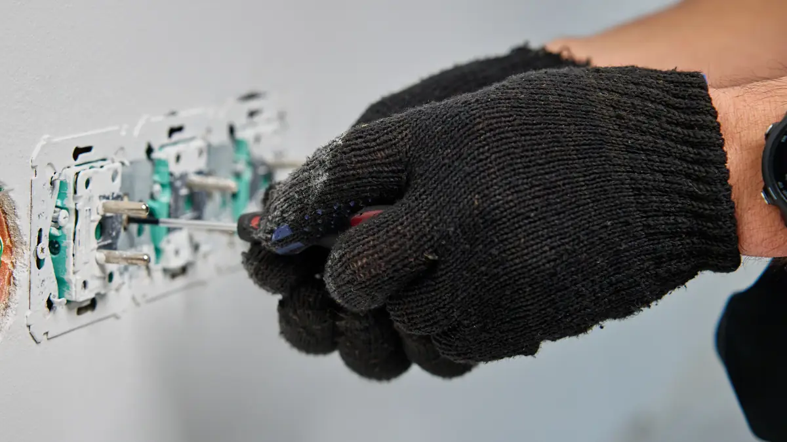

In short
If you can smell burning from a socket or fuse box, switch off the affected circuit at the consumer unit if it's safe to do so, don't use it, and call me on 015242 33305. If there is fire, smoke or someone has been hurt, call 999 first.
Faults I deal with
- Power loss in part or all of a property
- An RCD or breaker that keeps tripping
- Burning smells, scorch marks, or hot sockets and switches
- Buzzing, crackling or flickering lights
- Faults with outdoor lighting and garden sockets
- Electric shocks from appliances or fittings
- Problems found by an EICR
What to do first
- Check whether it's a power cut. Call 105 (free) to check for power cuts in your area, or ask your neighbours.
- If a breaker or RCD has tripped, unplug the appliances on that circuit and reset it once. If it trips again straight away, leave it off and call me. There is a fault.
- Don't keep resetting it, and don't touch exposed wires or anything that is hot, wet or scorched.
- Never use water on an electrical fire. Turn the power off if it's safe to do so, leave the building and call 999.

How I find a fault
- Make it safe. I isolate the affected circuit so it's safe to leave.
- Test the circuits. I test to narrow down where the fault is.
- Find the cause. It's often an appliance, a damaged cable, moisture or a loose connection.
- Fix it or quote. If I can fix it there and then, I will. If it needs bigger work, I'll explain the options and the cost before starting.
Emergency call-outs
Call me on 015242 33305. My phone is always on during the day, so you'll get a real answer. I'll ask a few questions, tell you straight away when I can get to you and, if there's any risk, talk you through how to make things safe until I arrive. For urgent faults I'll make the property safe first, then explain what the repair involves.
I don't run a night-time call-out service. If there's fire, smoke or someone has been hurt at any time, call 999.
If a fault turns out to be caused by an old board, see consumer unit upgrades.
Common questions about electrical faults
Why does my electric keep tripping?
The usual causes are an overloaded circuit, a faulty appliance, moisture in a socket or light fitting, a damaged cable, or a fault in the protective device itself. If it trips again after you've unplugged everything on that circuit, the fault is in the wiring and needs testing.
Is it safe to reset a tripped breaker?
Once, yes, after unplugging the appliances on that circuit. If it trips again, leave it off and call an electrician.
What should I do if a socket smells of burning?
Turn off that circuit at the consumer unit if you can do so safely, stop using the socket and call me. Don't use it again until it has been checked. If you see smoke or flames, leave the building and call 999.
Do you cover night-time emergencies?
I don't offer a night-time call-out service, but my phone is always on during the day. Call 015242 33305 and I'll tell you straight away when I can get to you, and talk you through how to make things safe in the meantime. If there's fire, smoke or injury at any time, call 999.